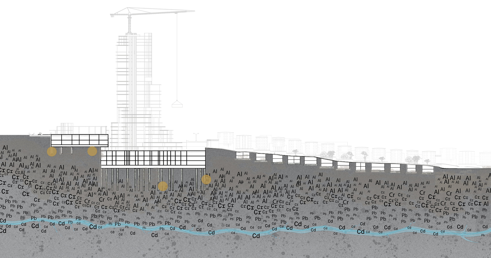

MicroSections
This section shows, how materials detached from the structure dissolve over time and interact with the surrounding environment. Concrete, steel reinforcement, and surface coatings decompose at different rates, creating a heterogeneous transformation field at the material scale.
